| Aplicação | OWASP Juice Shop v17.x (http://192.168.100.20:3000) | Tipo de teste | Black-box |
|---|---|---|---|
| Ferramentas | OWASP ZAP 2.16.0, Firefox, curl | Data | Maio 2026 |
Este relatório documenta os testes de segurança realizados sobre o OWASP Juice Shop, seguindo o OWASP WSTG v4.2. A Fase 1 testa a aplicação diretamente; a Fase 2 repete os mesmos testes com um WAF (Apache + ModSecurity + OWASP CRS) a proteger o servidor.
| VM | Nome | IP | SO | Função |
|---|---|---|---|---|
| 1 | client-vm | 192.168.100.10 | CentOS 9 | Cliente / Testes (ZAP 2.16.0, Firefox) |
| 2 | juiceshop-server | 192.168.100.20 | CentOS 9 + Docker | Servidor alvo (Juice Shop porta 3000) |
| 3 | waf-server | 192.168.100.30 | CentOS 9 | WAF – Apache2 + ModSecurity (Fase 2) |
Cenário 1 (Fase 1): client-vm → juiceshop-server:3000 | Cenário 2 (Fase 2): client-vm → waf-server:80 → juiceshop-server:3000
Testes efetuados contra http://192.168.100.20:3000. Scan ZAP com política FSI-Full-Scan (Threshold: Low, Strength: High). Scan autenticado em 22/05/2026 com admin@juice-sh.op.
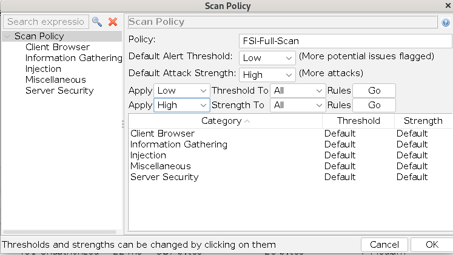
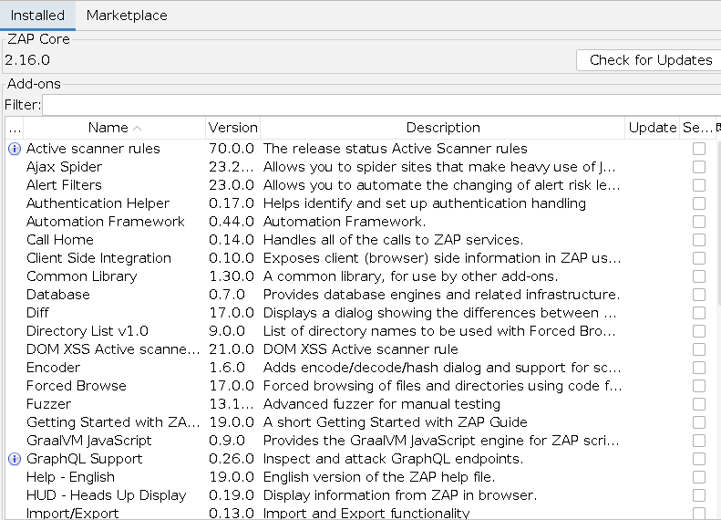
Express 4.22.1, SQLite e Angular em cabeçalhos e mensagens de erro. Comunicação sobre HTTP simples (sem HTTPS).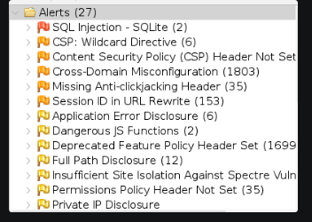
Access-Control-Allow-Origin: * em todas as respostas — qualquer domínio pode fazer pedidos cross-origin.X-Frame-Options ausente — vulnerável a clickjacking./#/administration expõe todos os emails registados (admin@juice-sh.op, jim@juice-sh.op, bender@juice-sh.op, e outros 7) após autenticação como administrador.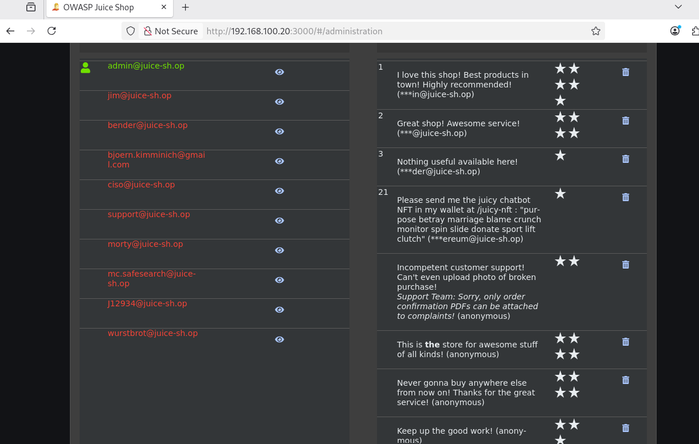
/#/administration: lista completa de emails de utilizadores e comentários expostosFuzz attack ao POST /rest/user/login com ZAP Fuzzer.
| Payloads testados | Resultado | |
|---|---|---|
| test@test.com | admin123, password, admin, 123456, password123, P@ssw0rd | 401 Unauthorized (todos) |
| admin@juice-sh.op | admin123 | 200 OK – Login bem-sucedido |
| admin@juice-sh.op | Outros payloads | 401 Unauthorized |
admin@juice-sh.op com password admin123 descoberta por force brute. CVSS: Crítico.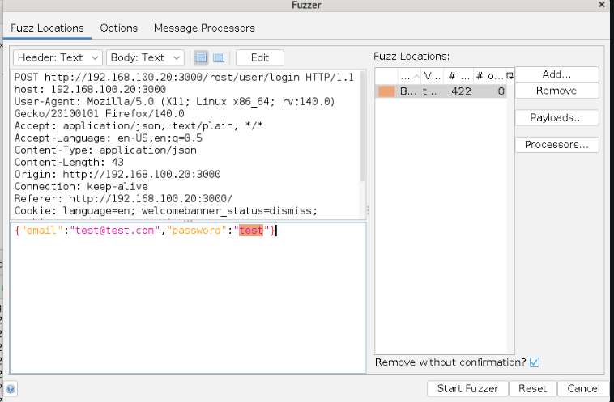
test@test.com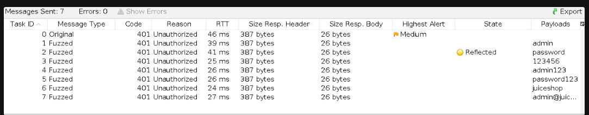
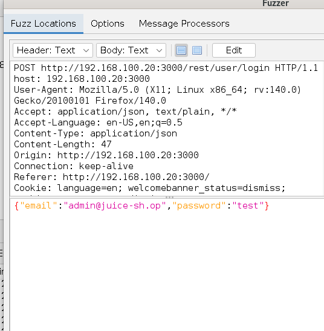
admin@juice-sh.op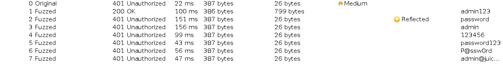
admin123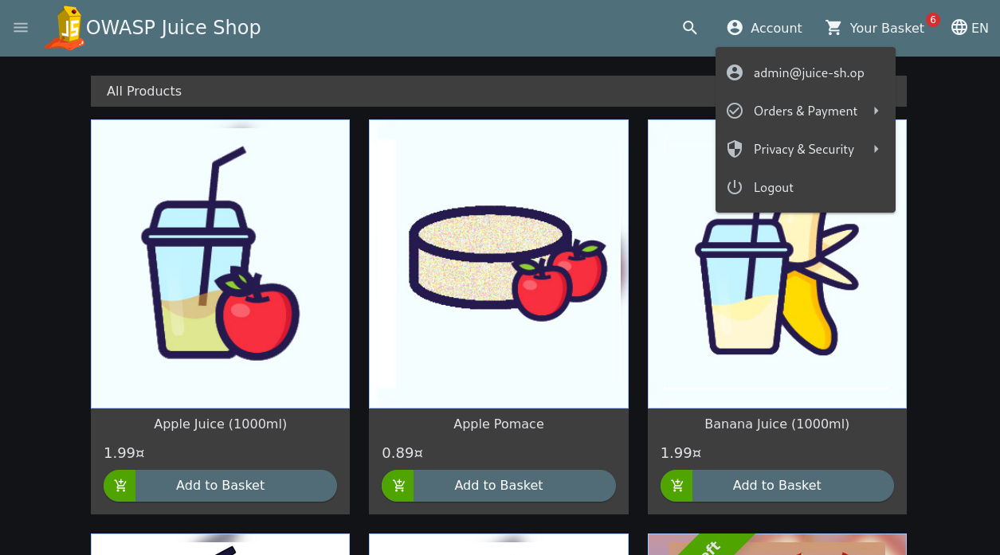
admin@juice-sh.op com password admin123/#/administration expõe lista completa de utilizadores, comentários e permite eliminação. Acessível a qualquer administrador autenticado./rest/basket/1, /rest/basket/2 retornam 401 sem token mas expõem IDs sequenciais. Com token válido o acesso seria possível.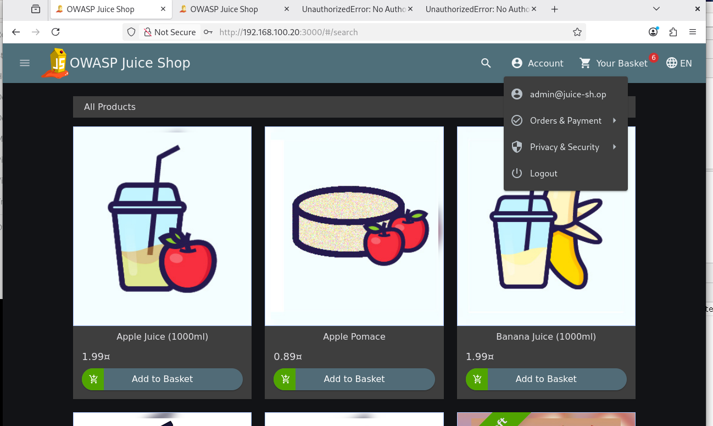
admin@juice-sh.op com acesso ao menu de administração e produtos' OR 1=1-- no campo email autentica como administrador sem password. RDBMS: SQLite. CVSS: Crítico.POST /rest/user/login | {"email":"' OR 1=1--","password":"test"} → 200 OK (admin login)
eval(), innerHTML) detetado.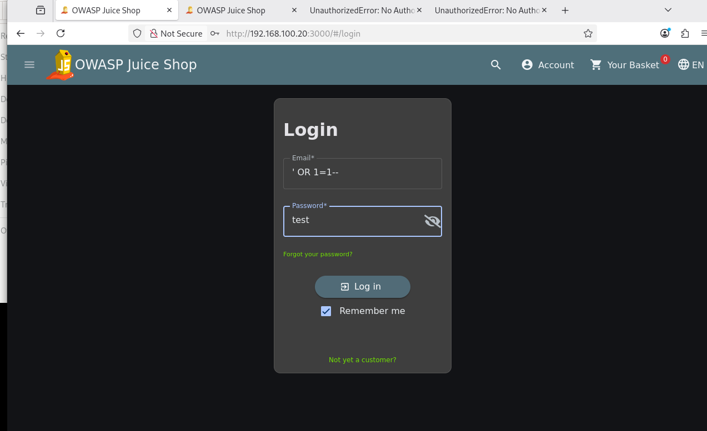
' OR 1=1-- no campo email — autenticação bem-sucedida como administradorExpress 4.22.1, tipo de BD (SQLite) e caminhos internos do servidor.Cross-Origin-Opener-Policy e Permissions-Policy ausentes ou deprecados (1699 inst.).Scan autenticado como admin@juice-sh.op (JSON-based auth). Relatório completo: scan-report-fase1-final.html.
| Tipo de Alerta | Risco | Inst. | WSTG |
|---|---|---|---|
| SQL Injection | High | 1 | WSTG-INPV-05 |
| SQL Injection – SQLite | High | 2 | WSTG-INPV-05 |
| Content Security Policy Header Not Set | Medium | 16 | WSTG-CONF-12 |
| Cross-Domain Misconfiguration (CORS) | Medium | 37 | WSTG-CONF-05 |
| Hidden File Found | Medium | 4 | WSTG-CONF-04 |
| Missing Anti-clickjacking Header | Medium | 11 | WSTG-CONF |
| Session ID in URL Rewrite | Medium | 39 | WSTG-SESS-04 |
| Private IP Disclosure | Low | 1 | WSTG-INFO |
| Timestamp Disclosure – Unix | Low | 18 | WSTG-INFO |
| X-Content-Type-Options Header Missing | Low | 39 | WSTG-CONF |
| Information Disclosure – Suspicious Comments | Info | 33 | WSTG-INFO |
| Session Management Response Identified | Info | 717 | WSTG-SESS |
| User Agent Fuzzer | Info | 516 | – |
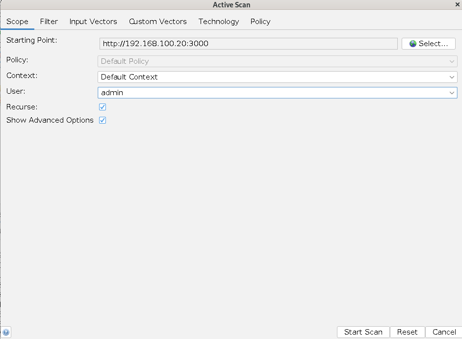
| # | Vulnerabilidade | WSTG | Severidade |
|---|---|---|---|
| 1 | SQL Injection – Login Bypass (' OR 1=1--) | WSTG-INPV-05 | Crítico |
| 2 | Password Fraca do Administrador (admin123) | WSTG-ATHN-07 | Crítico |
| 3 | Broken Access Control – Painel de Administração | WSTG-ATHZ-02 | Crítico |
| 4 | CORS Wildcard (Access-Control-Allow-Origin: *) | WSTG-CONF-05 | Alto |
| 5 | Information Disclosure – Emails de Utilizadores | WSTG-IDNT-01 | Alto |
| 6 | IDOR – API Baskets com IDs Sequenciais | WSTG-ATHZ-01 | Alto |
| 7 | Application Error Disclosure + Full Path Disclosure | WSTG-ERRH-01 | Médio |
| 8 | CSP Wildcard / CSP Ausente | WSTG-CONF-12 | Médio |
| 9 | Missing Anti-clickjacking Header | WSTG-CONF | Médio |
| 10 | Session ID in URL Rewrite | WSTG-SESS-04 | Médio |
| 11 | DOM XSS – Funções JavaScript Perigosas | WSTG-INPV-01 | Médio |
| 12 | Private IP Disclosure | WSTG-INFO | Médio |
| 13 | Hidden File Found (scan autenticado) | WSTG-CONF-04 | Médio |
| 14 | Timestamp Disclosure – Unix | WSTG-INFO | Baixo |
| 15 | X-Content-Type-Options Header Missing | WSTG-CONF | Baixo |
| 16 | Site Isolation / Feature Policy ausente | WSTG-CLNT | Baixo/Info |
| 17 | Information Disclosure – Suspicious Comments | WSTG-INFO | Informativo |
| 18 | Divulgação de Tecnologias Internas (Express, SQLite) | WSTG-INFO | Informativo |
WAF configurado na VM3 (192.168.100.30) como proxy reverso para o JuiceShop. Todos os testes da Fase 1 repetidos contra http://192.168.100.30. Scan ZAP Fase 2: 22/05/2026 às 17:07. Relatório: reportAttackFase2.html.
| Componente | Versão | Função |
|---|---|---|
| Apache HTTP Server | CentOS 9 | Servidor web e proxy reverso |
| ModSecurity | mod_security | Motor WAF – inspeção de pedidos HTTP |
| OWASP CRS | mod_security_crs v3.3.5 | Regras de deteção de ataques |
# /etc/httpd/conf.d/juiceshop-waf.conf
<VirtualHost *:80>
ProxyPass / http://192.168.100.20:3000/
ProxyPassReverse / http://192.168.100.20:3000/
Header always set X-Frame-Options "SAMEORIGIN"
Header always set X-Content-Type-Options "nosniff"
Header always set X-XSS-Protection "1; mode=block"
</VirtualHost>
# mod_security.conf: SecRuleEngine On | SecRequestBodyAccess On
# Regra JSON (id:900001): ctl:requestBodyProcessor=JSON (Content-Type: application/json)
# CRS activo: REQUEST-942-APPLICATION-ATTACK-SQLI.conf + REQUEST-949-BLOCKING-EVALUATION.conf
' OR 1=1-- retorna 403 Forbidden. ModSecurity: anomaly score SQLI=8 (REQUEST-942 + REQUEST-949).requestBodyProcessor=JSON para inspeção de corpos application/json.ZAP Fuzzer contra POST http://192.168.100.30/rest/user/login. WAF não bloqueia força bruta (sem rate-limiting no CRS base).
| Payload (password) | Código | WAF Bloqueou? | |
|---|---|---|---|
| test@test.com | admin123, password, 123456, letmein, qwerty, test | 401 (todos) | NÃO |
| admin@juice-sh.op | admin123 | 200 OK (799 bytes) | NÃO |
| admin@juice-sh.op | password, 123456, letmein, qwerty, test | 401 (todos) | NÃO |
| Categoria WSTG | Resultado Fase 2 | Estado |
|---|---|---|
| WSTG-INFO – Divulgação de tecnologias | Cabeçalhos Express/SQLite persistem. Apache adiciona Server: com versão (24637 inst.) | NÃO MITIGADO |
| WSTG-CONF – CORS Wildcard | JuiceShop continua a enviar Access-Control-Allow-Origin: *; WAF não filtra respostas | NÃO BLOQUEADO |
| WSTG-CONF – CSP Ausente | Persiste (16339 inst. no scan ZAP). WAF não injeta CSP | NÃO BLOQUEADO |
| WSTG-CONF – Anti-clickjacking | WAF adiciona X-Frame-Options: SAMEORIGIN, mas JuiceShop também envia o mesmo → duplicado (880 inst.) | MITIGADO (duplicado introduzido) |
| WSTG-CONF – X-Content-Type-Options | WAF adiciona nosniff corretamente | MITIGADO ✓ |
| WSTG-IDNT – Enumeração de utilizadores | Rotas Angular (#) nunca chegam ao servidor; WAF não pode inspecionar | N/A – Lógica aplicacional |
| WSTG-ATHN – Password fraca | WAF não distingue autenticação legítima de força bruta sem rate-limiting | NÃO BLOQUEADO |
| WSTG-ATHZ – Broken Access Control | Fragmento # nunca chega ao servidor; WAF não pode bloquear | NÃO BLOQUEADO |
| WSTG-SESS – Session ID in URL | Comportamento gerado pela aplicação; WAF retransmite sem alterar URLs (15942 inst.) | NÃO BLOQUEADO |
| WSTG-INPV – SQL Injection (login) | 403 Forbidden – bloqueado pelo ModSecurity + CRS (SQLI score = 8) | BLOQUEADO ✓ |
| WSTG-INPV – SQL Injection (outros endpoints) | ZAP detetou 5 inst. via WAF (1 genérico + 4 SQLite) – CRS não cobre todos os vetores REST | PARCIALMENTE BLOQUEADO |
| WSTG-ERRH – Error Disclosure | SQLi bloqueado reduz alguns erros, mas erros 401 continuam a expor versão Express (7 inst.) | PARCIALMENTE MITIGADO |
| WSTG-CRYP / WSTG-BUSL / WSTG-CLNT | N/A (sem HTTPS; fora do âmbito; WAF adiciona X-XSS-Protection) | N/A / PARCIAL |
Scan Fase 2: 22/05/2026, 17:07 contra http://192.168.100.30.
| Vulnerabilidade | WSTG | Fase 1 | Fase 2 (WAF) | WAF |
|---|---|---|---|---|
| SQL Injection – Login Bypass | WSTG-INPV-05 | 200 OK – admin | 403 Forbidden | BLOQUEADO ✓ |
| SQL Injection – Outros endpoints | WSTG-INPV-05 | 2 inst. | 5 inst. | PARCIAL |
| Password Fraca (admin123) | WSTG-ATHN-07 | 200 OK | 200 OK | NÃO BLOQUEADO |
| Broken Access Control (/#/administration) | WSTG-ATHZ-02 | Acessível | Acessível | NÃO BLOQUEADO |
| CORS Wildcard | WSTG-CONF-05 | 980+ inst. | 980 inst. | NÃO BLOQUEADO |
| CSP Header Not Set | WSTG-CONF-12 | Presente | 16339 inst. | NÃO BLOQUEADO |
| Missing Anti-clickjacking | WSTG-CONF | 35 inst. | 880 inst. (duplicado) | MITIGADO (duplicado) |
| X-Content-Type-Options ausente | WSTG-CONF | 39 inst. | Adicionado pelo WAF | MITIGADO ✓ |
| Session ID in URL Rewrite | WSTG-SESS-04 | 153 inst. | 15942 inst. | NÃO BLOQUEADO |
| Application Error Disclosure | WSTG-ERRH-01 | 6 inst. | 7 inst. | NÃO BLOQUEADO |
| Hidden File Found | WSTG-CONF-04 | 4 inst. | 8 inst. | NÃO BLOQUEADO |
| Multiple X-Frame-Options (NOVO) | WSTG-CONF | – | 880 inst. | INTRODUZIDO PELO WAF |
| Server Version Leakage Apache (NOVO) | WSTG-INFO | – | 24637 inst. | INTRODUZIDO PELO WAF |
| Timestamp Disclosure – Unix | WSTG-INFO | 18 inst. | 1776 inst. | NÃO BLOQUEADO |
admin123) e painel de administração exposto.requestBodyProcessor=JSON)./#/, IDOR) — requerem correções na aplicação.Header always unset e ServerTokens Prod.